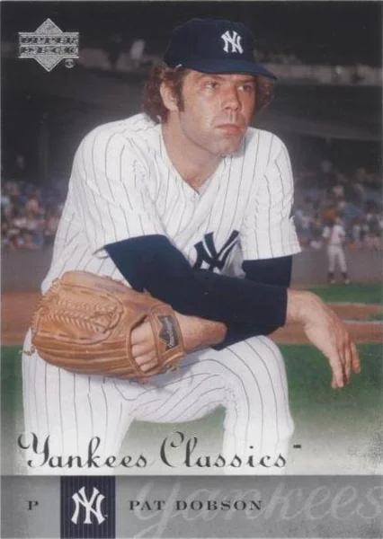

Pat Dobson "Dobber"
Career Highlights & Facts
(Facts are AI-generated and may require verification)
- Struck out 21 batters in a single game during winter league competition.
- Member of a pitching rotation that featured 4 teammates each winning at least 20 games in a single season.
- Threw a no-hit, no-run game during an exhibition tour in a foreign country.
Would you like to find out more about Pat Dobson?
Patrick Edward Dobson Jr. was born February 12, 1942, in Depew, New York, a small village ten miles east of Buffalo. In his youth, Pat often took the bus there to watch his heroes Joe Caffie and Luke Easter, stars of the Buffalo Bisons of the International League. Pat attended Lancaster Central High School, where he was the star pitcher, amassing an impressive 19–1 record. His high school buddies gave him the nickname “The Cobra.” A lanky, hard-throwing right-hander, Pat stood 6-foot-3. Scouts from Boston, Detroit, and San Francisco pursued him, and he eventually was signed by Tigers scout Cy Williams. At the age of 17 he received an impressive $25,000 signing bonus. Pat would later say, “I blew my money on cars and good living, but I enjoyed it and I’d do it again.”
In 1960, Pat made his professional debut with the Durham Bulls, at that time a Class A Detroit affiliate. He compiled a 7–9 record, striking out 137 batters in 157 innings, but he also walked 98. The following year was split between Knoxville and Durham. His 4–10 record was reflected by his elevated WHIP (walks plus hits per innings pitched) of 2.01 over 119 innings. In 1962, Pat pitched for Montgomery, going 8–7. He significantly lowered his WHIP to 1.39 and struck out better than a batter per inning. He finished the year with Duluth-Superior in the Northern League, appearing in four games and being treated rather roughly by opposing teams.
The 1963 season found Pat still toiling in the lower minors, starting with Jamestown in the New York-Penn League and finishing in Knoxville of the Double A South Atlantic League. He showed some promise by year’s end, winning five and losing one at Knoxville with an impressive 1.33 ERA. Dobson began 1964 in Knoxville, reclassified a Double A club, and in midseason was promoted to the Tigers’ Triple A farm team in Syracuse. He struggled a bit with the top minor league talent and was demoted to Double A Montgomery in 1965. There he appeared in only 17 games, going 4–1. He finished the year back in Syracuse, pitching four times in relief. Pat spent the winter playing ball in Puerto Rico. He said later that his success there was instrumental in rebuilding his confidence.
Dobson was at a crossroads in 1966. He didn’t believe he was getting a real chance in the Detroit organization. He found himself on loan to Cleveland’s Portland team in the Triple A Pacific Coast League. Dobson started slowly, not getting into the starting rotation until the third week of the season. Despite missing a week to bursitis, he ended up becoming one of the top pitchers in the league. Pat finished with a record of 12–9 and an 3.45 ERA. His manager, John Lipon, remarked, “Pat’s got a good fast ball and slider, and at times a good curve. In fact, when he gets his big curve working effectively, he reminds me of Tommy Bridges.” Pat played winter ball that year in the Dominican League and was one of the most impressive American pitchers, jumping out to a 3–0 record.
Dobson started 1967 with the Triple A Toledo Mud Hens, by then the Tigers’ top farm team. After an impressive 4–1 start, he was called up to the parent club. He made his major league debut May 31, 1967, against Cleveland. He came into the game in the sixth inning with a runner on second and promptly surrendered a run-scoring single. He settled down and got the next two batters. In the seventh inning he surrendered a two-run home run to Leon Wagner. In his inning and two-thirds, Pat gave up two runs on four hits, but did not walk a batter and recorded three strikeouts. He was in the major leagues to stay.
Dobson appeared in 28 games in his rookie season. Initially, he was used only in Detroit blowout losses. But on August 2 Pat came in and pitched three strong innings against the Orioles to preserve a 1–0 lead. Manager Mayo Smith showed great confidence in the rookie by leaving Dobson in to start the ninth inning. But disaster struck when Pat walked Frank Robinson and then gave up a game-ending home run to Brooks Robinson. Still, his strong showing earned him his only start of the 1967 season on August 6 in the nightcap of a doubleheader against Cleveland. He surrendered four runs in the first inning, three of them coming on a Duke Sims homer. He left for a pinch-hitter in the top of the third, trailing 4–0. Dobson ended up with the loss as the Tigers fell 6–3. Then, from August 16 through September 15, Pat strung together eight appearances with 18.1 innings of shutout relief. Mayo Smith called him “the most improved pitcher on the staff.” Dobson earned his first major league victory September 9 against the Chicago White Sox when the Tigers overcame a 3–0 deficit by scoring seven runs in the ninth inning. His scoreless string ended abruptly September 17 against Washington as he surrendered a three-run home run to the Senators’ Hank Allen that turned a close game into a rout. Smith didn’t use Dobson again until the final game of the season when he faced two California Angels, walking the first and giving up a sacrifice before being pulled in favor of Mickey Lolich in a Detroit defeat. The Tigers saw the 1967 pennant go to the Boston Red Sox.
Pat spent the winter playing ball in Puerto Rico. He impressed a lot of baseball men when he rewrote the record books December 10, 1967, by striking out 21 batters, eclipsing Juan Pizzaro’s old league mark of 19.
Dobson entered 1968 full of confidence. He developed a strong working relationship with pitching coach Johnny Sain. Pat said Sain told him that he gripped the ball too tight and was teaching him to relax. As Dobson explained, “This gives my pitches better movement, better everything.” Sain also taught him a different grip for his slider; it became his best pitch. Dobson commented, “I can throw it anytime I want to for a strike. I used to have a slider that was flat. It broke away from a right-handed hitter. The one Sain gave me is better because it dips.”
Dobson worked a couple of innings in relief of Earl Wilson during the April 10 opening day loss to Boston. He contributed two scoreless innings in each of two Tigers come-from-behind victories in April. He then had a bad outing against the Yankees, allowing three batters to reach base without recording an out; he also threw two wild pitches. But the Tigers once again rallied for the victory. Pat got little work from manager Smith the first two months. He appeared in only 10 games, working 12 innings. On June 1, he was called upon to relieve Les Cain, who had been knocked around by the Yankees for four runs in the first inning. Pat shut the Yankees down for 5.2 innings, and the Tigers came back to win the game.
Following an injury to Earl Wilson, Dobson and John Hiller undertook several starts in his place. Pat hurled a complete-game shutout at Boston June 4. Coach Wally Moses called it the Tigers’ most important victory of the season. A week later he earned a victory against the Minnesota Twins, allowing just one run in 7.2 innings, while striking out 10 batters. He had a string of 25 scoreless innings snapped by a Tony Oliva home run. Three days later he pitched five scoreless innings in relief as the Tigers went on to beat the White Sox in 14 innings. Pat saved the second game of a doubleheader against Chicago June 16. Over the next eight days he racked up two more saves. On June 21, Dobson came on to start the tenth inning and shut the Indians down through the twelfth. When the Tigers took the lead in the top of the thirteenth, Pat was in line for another victory. But he surrendered a single to Duke Sims and a home run to Tony Horton. Pat bounced back to save three more games before the All-Star break. In a string of 13 games won by the Tigers, Dobson won one and saved five.
Dobson’s contributions weren’t limited to the ball field. He had a flair for having fun with his teammates. He coined nicknames for many of them, including “Pizza” for Tom Matchick in honor of his red hair. He also hung the name “Ratso” on his roommate John Hiller, naming him after the Dustin Hoffman character in the movie
Midnight Cowboy
. He said, “When I fool around in the bullpen, I do it for a purpose. I stay relaxed and so do the guys around me.” Pat was known simply as “Dobber,” a nickname he carried the rest of his life. Bill Freehan emphasized Pat’s competitiveness. “He goes after the hitters now and really challenges them. The pressure is on them, not him.”
The Tigers appeared sluggish after the All-Star break. They dropped five out of eight games heading into a big four-game series with the Baltimore Orioles. In the first game, the Tigers trailed 4–2 in the ninth inning as Dobson came in to retire the side. When Matchick hit a dramatic two-run homer with two out and a 3–2 count on him, Dobson ended up with his third win of the season. Two days later Mayo needed a starter for the second game of a doubleheader against the O’s. Dobson only lasted 2.1 innings, giving up two runs on four hits and a walk to suffer his second loss of the season. He started once again in Washington on August 1 and was handed another defeat as he gave up a grand slam to light-hitting Ron Hansen. Pat got five more starts in August, losing two and getting no decisions in the other three games. He pitched well in the games he lost, falling 5–3 and 1–0. Twice the bullpen cost him victories. Eventually, however, Joe Sparma was returned to the starting rotation, and Pat was sent back to the bullpen.
Dobson started September off with a bang, winning back-to-back games against the Oakland A’s in relief, then saving the third game of the series. He was given another starting assignment against the Twins. Dobson pitched brilliantly except for two pitches to rookie Graig Nettles that were lined into the seats. The second one proved to be the winner in a 2–1 loss for the Tigers. Pat appeared in only four of the last 19 games, for a total of six innings. He got a save and took two losses in those four games. His final numbers for the pennant-winning Detroit Tigers were 5–8, a 2.66 ERA, and seven saves. He pitched in 125 innings and had an impressive WHIP of 1.10. He led the staff with 47 appearances.
Dobson appeared in the three games the Tigers lost in the 1968 World Series. He mopped up for Denny McLain in Game 1, allowing a home run to Lou Brock. In the third game, he came on for an injured Earl Wilson with the Tigers up 2–1 and two runners on. He got Orlando Cepeda out, but gave up a three-run home run to Tim McCarver as the Cardinals went on to win the game 7–3. His final appearance was in Game 4, in which he shut down the Cards for two innings on one hit.
In 1969 Pat appeared in 49 games, winning five games, losing ten, and saving nine. As in 1968, he worked as both a starter and reliever. He had one complete-game victory on July 1 against the Red Sox. He appeared in his last game as a Tiger on September 16, pitching two scoreless innings against the Yankees. His season ended prematurely when Wayne Redmond jumped on the little toe of his left foot after being startled by a mouse in the dugout.
Dobson once again went to Puerto Rico for winter ball. While down there he railed against Detroit management for firing pitching coach Johnny Sain and not making any moves during the season. He criticized the Tigers’ aging infield and declared that General Manager Jim Campbell had “no guts to make the trades we need to make.” On December 4, 1969, Campbell promptly made a trade, sending Pat Dobson and Dave Campbell to the San Diego Padres for Joe Niekro.
Despite going from a perennial contender to a second-year expansion team, Dobson was excited to finally get a chance to be a full-time starter. He beat the Atlanta Braves 8–3 on opening day in San Diego. He struck out six batters, including Hank Aaron. For the season, Dobson compiled a 14–15 record for the worst team in the National League. He was a workhorse for the Padres, starting 34 games and even picking up a save in six relief appearances. Despite pitching on a bad knee all year, Pat was not about to give up his spot in the rotation now that he was a starting pitcher. “I waited three years to become a regular starter. They can have the bullpen” Dobson said. He said being in the rotation allowed him to work on his control. “It was excellent discipline. And I learned that control pitchers get the corners from the umpires,” he said. Dobson established single season records for wins and strikeouts for the young franchise.
Dobson’s stay in San Diego was limited to one season. On December 1, 1970, he was traded to the Orioles along with Tom Dukes for Tom Phoebus, Al Severinsen, Fred Beene, and Enzo Hernandez. Earl Weaver, the Orioles manager, was elated. He had been a fan of Dobson “ever since the night I saw him strike out 21 guys in a game in Puerto Rico.” His first start of the season was against his old team, the Tigers. He gave up three runs in the first inning, then shut Detroit out for the next seven. He was pulled for a pinch-hitter, and the Tigers went on to win in extra innings. Pat won his next start against the Yankees, only allowing one run in the complete-game victory. But he won one of his next nine starts. Before his June 17 start, his record stood at 3–4 with an ERA of 3.70. Starting with a victory over the Yankees that day, Pat would win 12 starts in a row. Eleven of the twelve victories were complete games. Then, starting with a loss to the Yankees, Pat slumped, winning only two of nine starts. He finished strong, however, winning his last three starts to reach the coveted twenty-win level. Dobson and teammates Mike Cuellar, Dave McNally, and Jim Palmer all won 20 or more games, and the 1971 Orioles were only the second team in major league history to boast four twenty-game winners.
Baltimore swept the Oakland A’s in the American League playoffs, and went into the 1971 World Series as the favorite over the Pittsburgh Pirates. Pat at first was the odd man out as Weaver decided to go with a three-man rotation for the postseason. Pat did not appear in the AL Championship Series but finally got a chance to start Game 4 of the World Series. The O’s staked him to a 3–0 lead in the first, but Pittsburgh came back with two runs in the bottom of the inning. They tied it up in the third, and Pat was pulled in the sixth inning with the score 3–3. The Pirates went on to win, 4–3. Pat made another Series appearance in Game 6, coming on to start the 10th inning. He retired the first batter, but then gave up a single to Dave Cash, who stole second on a strike-three pitch to Richie Hebner. Dobson intentionally walked Roberto Clemente and then was replaced by lefty Dave McNally to face the left-handed batting Willie Stargell. McNally ended up with the win when the Orioles scored in the bottom of the tenth. In Game 7, Dobson came on to start the ninth inning with the Orioles down 2–1. He retired the first two batters, striking out Clemente. But he gave up back-to-back singles, and McNally was once again summoned to face Stargell, whom he retired for the final out. The Orioles went down meekly in the ninth, and the Pirates were world champions.
After the Series, the Orioles and Dobson were scheduled for an exhibition tour of Japan. On November 2, 1971, in Toyama, Japan, Pat hurled a no-hit, no-run game against the Tokyo Yomiuri Giants, winning 2–0.
The Oriole dynasty slipped in 1972, finishing five games behind the Tigers. Dobson’s record fell to 16–18 despite his posting a lower ERA and WHIP than he had in his 20-win season. He made the All-Star team, although he did not appear in the game. Pat stirred up a little controversy in Detroit when he suggested that Billy Martin was misusing Tom Timmerman, saying he made a better relief pitcher than a starter. When Baltimore came into Detroit for a four-game set, they were trailing the Tigers by two games. Dobson was scheduled to pitch the opener for the O’s. Martin suggested Dobson would tremble and flee under the Tiger Stadium long ball hex. Instead, Pat threw a complete-game four-hitter, winning 3–2.
Dobson loved it in Baltimore and was shocked when the Orioles traded him to Atlanta on November 30, 1972. Along with Dobson, Atlanta got Davey Johnson, Roric Harrison, and Johnny Oates while sending Earl Williams and Taylor Duncan to Baltimore. Dobson’s debut for Atlanta was inauspicious as he was bombed by the Astros 10–3. He beat San Diego in his next start, then went 1–6 in his next nine starts. After beating the Cubs to raise his record to 3–7, he was traded to the Yankees on June 7, 1973. He had hated it in Atlanta. He complained, “I went from the best defensive team to the worst. I throw ground balls. I need defense. Their whole game is tailored to offense—the park, the wind, and the grass.” He was happy to be in New York and compiled a 9–8 record for the Yankees. He enjoyed playing for Ralph Houk, and the Yankees were in contention up until late August.
Dobson was a little concerned when manager Ralph Houk was replaced by Bill Virdon. He felt Houk had been forced out by management. Pat won his first game in 1974, but lost eight of his next ten decisions. At that point, he started butting heads with Virdon over the pitching rotation. Virdon was experimenting with a five-man rotation, while Dobson insisted he needed to work every fourth day. The manager relented and went back to the four-man rotation. Dobson suddenly got hot and went on a 16–7 run the rest of the way. The Yankees were in first place on September 23, but wound up two games behind Baltimore as the Orioles won their last eight games while New York was winning five and losing three. Pat ended up 19–15 with a 3.07 ERA.
The Yankees believed that 1975 would be the year they returned to their former glory. Dobson started slowly, but he won six games in a row to raise his record to 8–5. He complained to the press after being pulled with two out in the seventh inning in a game against the Twins. At the time the Yankees were trailing 1–0, and there were two outs. Sparky Lyle came in and gave up a two-run single to Lyman Bostock. Virdon held a clubhouse meeting the next day and said, “One guy is causing dissension on the club.” When the manager reinstituted the five-man rotation, Dobson went into a tailspin, winning only three more games all year. Virdon was fired in August and replaced by Billy Martin. But Martin and Dobson didn’t get along well, either. Pat said Billy “had a habit of second-guessing what you threw, too.”
In November, Dobson found himself traded once more, this to Cleveland in exchange for Oscar Gamble. Dobson’s outspokenness didn’t always sit well with management. But he said, “I have never regretted one word I’ve said. ’Course, there have been repercussions, but if you’re right you have to take the consequences.”
His manager with the Indians was Frank Robinson, his old Orioles teammate. Dobson respected Robinson, calling him the finest player he’d ever teamed with. Pat was considered the “elder statesman” of a young Indians staff that also included a rookie named Dennis Eckersley. Dobson had a fine season with the Indians, posting a 16–12 record with a 3.48 ERA. Cleveland finished above .500 for the first time since 1968. But in 1977, his record plummeted to 3–12, and his ERA soared to 6.14. He didn’t get his first victory until June, after losing his first five decisions. His last victory came early in July against the Kansas City Royals. Shortly after that he lost his spot in the rotation and was relegated to the bullpen. What would be his final major league appearance came on September 19, 1977—fittingly, at Tiger Stadium. Dobson came on in relief in the seventh inning, getting the final two outs. He gave up a leadoff single in the eighth and was pulled from the game. The runner eventually scored, and Pat ended up taking the loss. He was released by the Indians on April 14, 1978, without making an appearance that year.
Pat Dobson won 122 games while losing 129 in the major leagues and saved an additional 19 games. His ERA for his career was a solid 3.54, and his WHIP was 1.28. In 17 seasons of professional ball, he played for 15 different teams.
Dobson developed a second career as a pitching coach. He summed up the logic behind the move: “Who knows more about pitching than me? Just take a look at the crap I’m getting away with out there [on the mound]. I rest my case.” He was working for Triple A Nashville in 1982 when he was summoned to the parent club, the Milwaukee Brewers. Their pitching coach, Cal McLish, had become ill, and Pat was asked to fill in. This was the year of Harvey’s Wallbangers, and the Brewers advanced to the World Series, losing to the St. Louis Cardinals in seven games. Pat’s son Chris fondly remembers the days in Milwaukee. His dad would work his charts, chug coffee, chain smoke his menthol cigarettes, and complete the crossword puzzle in the
New York Times
. “I never saw a crossword puzzle my father couldn’t finish,” Chris said. After the Brewers fell to last place in 1984, Dobson and all the coaches were let go. He returned to coaching in the minor leagues before returning to the majors with San Diego from 1988 to 1990.
Dobson managed of the Fort Myers Sun Sox in the Senior League in 1989 and 1990. The Senior League was a new winter ball league set in Florida for players 35 and older. There were eight teams in two divisions. Pat’s team finished second and was eliminated in the first round of the playoffs. The league folded halfway through its second season.
In 1991, Dobson became the Royals’ pitching coach. He was considered a key man on the team, trying to restore the confidence of reliever Mark Davis. He had handled the star pitcher before at San Diego. Another project was Mark Gubicza, coming back from shoulder surgery. Pat was considered as a possible replacement for manager John Wathan, who was fired in May 1991. The job went instead to Hal McRae. Dobson’s relationship with the new manager was rocky, and Pat resigned on September 9 when he could not get assurance that he would be asked to return the next year. Later that year, Pat attended the final-day ceremonies at Memorial Stadium in Baltimore and reunited with his fellow 20-game winners, Jim Palmer, Dave McNally, and Mike Cuellar.
Dobson joined the Colorado Rockies expansion team as an advance scout in December 1992, serving in that capacity until 1995. He left the Rockies to take the Baltimore pitching coach job in 1996, working with his close friend, manager Davey Johnson.
Despite the Orioles finishing a close second to the New York Yankees, Dobson was fired at the end of 1996 by owner Peter Angelos. Pat and the Orioles’ young ace, Mike Mussina, did not see eye to eye and after a shouting match at the mound during a crucial September game, the writing was on the wall. Over the objections of General Manager Pat Gillick and manager Johnson, Ray Miller was hired as the new pitching coach.
Dobson next took a position as an advance scout with the San Francisco Giants in 1997, eventually becoming a special assistant to General Manager Brian Sabean. He was one of Sabean’s top talent evaluators and scouted many of the players the Giants acquired, particularly pitchers. In 1998, Dobson was elected to the Greater Buffalo Sports Hall of Fame. His induction notice credited him with enlivening every clubhouse he entered. One writer even suggested that Pat may have been the funniest man who ever wore a baseball uniform.
Dobson played a key role in persuading Bruce Bochy to take the manager’s position with the Giants in 2006, even jetting to San Francisco with Bochy when he went for an interview. Shortly afterward, Pat began to feel ill. After two weeks, he went to a hospital for tests and was diagnosed with leukemia. One night after checking in to the hospital, Pat Dobson died on November, 22, 2006, in San Diego. He was survived by his wife Kathe, and six children, Pat III, Nancy, Stacy, Chris, Shannon, and Stephanie.
Baggerly, Andrew. “Dobson played role in Bochy’s decision.” Oakland Tribune, December 6, 2006. Accessed at
http://findarticles.com/p/articles/mi_qn4176/is_20061206?pnum=2&opg=n16893475
Cour, Paul. “Bulldog Dobson—Padre Workhouse and Battler.”
The Sporting News
, September 19, 1970, p. 20.
Flaherty, Tom. “McLish Loses Out In Coaching Change.”
The Sporting News
, November 29, 1982, p. 60.
Frau, Miguel. “Dobson Eclipses Pizarro’s Strikeout Record, Fans 21.”
The Sporting News
, December 23, 1967, p. 47.
Hatter, Lou. “Dobson Turns Detroit Into Bengal Snakepit.”
The Sporting News
, July 22, 1972, p. 9.
Jackman, Phil. “Pat Dobson Acquired to Fill No. 4 Spot on Oriole Staff.”
The Sporting News
, December 19,1970, p. 38.
Jackman, Phil. “O’s Thank Their Lucky Stars for New Ace Dobson.”
The Sporting News
, August 14, 1971, p. 10.
Jackman, Phil. “O’s Boast Four 20-Win Aces, Equal Feat of ’20 Chisox Stars.”
The Sporting News
, October 9, 1971, p. 11.
Kaegel, Dick. “Kansas City Royals.”
The Sporting News
, September 23, 1991, p. 26.
Kubatko, Roch. “O’s ‘gamer’ won 20 in ’71.”
Baltimore Sun
, November 24, 2006, p. D11.
McKean, Dale. “‘All I Needed Was a Chance’—Beaver Ace Dobson Proving It.”
The Sporting News
, July29, 1966, p. 38.
Nightengale, Bob. “Orioles Functioning Like a Dysfunctional Family.”
The Sporting News
, October 28, 1996, p. 15.
Nightengale, Dave. “1991:Hello to Odd Ball.”
The Sporting News
, April 1, 1991, p. S12.
Pepe, Phil. “Sleight of Hand Provides Dobson Toehold on Wins.”
The Sporting News
, September 14, 1974, p. 29.
Powers, Roger. “Sports of All Sorts.”
Grit
, (Williamsport, Pa.), November 14, 1971, p. 43.
Reidenbaugh, Lowell. “Cardinals Flash Muscle, Speed in a 7–3 Triumph.”
The Sporting News
, October 19, 1968, p. 9.
Spoelstra, Watson. “Winter Loop Whiff Feats Mark Dobson as ’58 Bengalani to Watch.”
The Sporting News
, January 6, 1968, p. 50.
Spoelstra, Watson. “Unheralded Dobson and Hiller Win Tiger Headlines.”
The Sporting News
, June 29, 1968, p. 11.
Spoelstra, Watson. “Tiger Jokester Dobson Wipes Grin Off Batters’ Faces.”
The Sporting News
, June 21, 1969, p. 12.
Spoelstra, Watson. “Kilkenny Is Tough Pitcher In a Paradise for Swingers.”
The Sporting News
, October 11,1969, p. 17.
Sudyk, Bob. “The Travels and Travails of Pat Dobson.”
Baseball Digest
, Vol. 36, No.1 1977, pp. 74–78.
Vicioso, Fernando. “Dobson Helps Tigers Bare Sharp Teeth.”
The Sporting News
, November 26, 1966, p. 43.
www.buffalosportshallfame.com
www.espn.com
www.sfgate.com
www.thebaseballcube.com
www.thebaseballpage.com
Note
This article originally appeared in the book
Sock It To ‘Em Tigers–The Incredible Story of the 1968 Detroit Tigers
, published by Maple Street Press in 2008.
Photo Credit
The Topps Company
Full Name
Patrick Edward Dobson
Born
February 12, 1942 at Buffalo, NY (USA)
Died
November 22, 2006 at San Diego, CA (USA)
Stats
Baseball Reference
Retrosheet
Scouts
1968 Detroit Tigers
1982 Milwaukee Brewers
Career Totals
| WAR | W | L | ERA | G | GS | SV | IP | SO | WHIP |
|---|---|---|---|---|---|---|---|---|---|
| 16.7 | 122 | 129 | 3.54 | 414 | 279 | 19 | 2120.1 | 1301 | 1.277 |
Statistics via Baseball-Reference.com
The Original Clue